← 返回阅读库 · 原论文目录
论文讲解阅读文档 · 新模型 · v076
TNT Transformer in Transformer[2103.00112]
视频时长 00:07:15；讲解文字 3,752 字符；提取讲解画面 23 张。按视频原顺序阅读，每段文字保留时间戳。
文字来自整段视频的自动语音转写，按自然停顿分段，并与 PPT / 论文页面 / 演示画面对齐。未将讲解压缩为摘要；术语、数字和口述公式请结合画面及原论文核对。 阅读稿已校正规范部分明确术语误识别；原始逐字稿和每处修改记录另行保留。
讲解画面为源视频截图（640×360），不是可编辑 PPT 文件。全片按每秒 2 帧扫描内容变化，逐步展开页保留；连续动画保留代表画面。清晰度受源视频限制。
下载完整资料包 · 含离线 HTML、PDF、Word、全部 PPT 画面和字幕。
原论文与材料
Transformer in Transformer · 下载完整 PDF（14 页）
按时间阅读
00:00:00–00:00:36 · 画面 001
00:00:00–00:00:36 · 画面 001大家好,今天我们来介绍 Transformer in Transformer 这篇论文。那么这篇论文的核心思想就是我们传统的 Transformer 它是可以直接看到全局的每个 patch 之间的关系的，但是它可能对于每个 patch 之内的像素之间的相互关系并不会特别的敏感。那么在本文中作者就提出了，我如果在大的 Transformer 里面套一个小的 Transformer专门来解决每个 patch 之内的每个像素的 token 每个像素的 embedding 之间它们之间的 attention 的关系那么是不是能够提升一下整个系统的性能呢那么答案是肯定的在这个视频中呢我们会介绍作者怎么样把这两个 transformer 套在一起的那么因为之前我们已经介绍过 transformer encoder 了所以这次呢我们就直接介绍本文提出的 transformer in transformer
00:00:36–00:00:37 · 画面 002
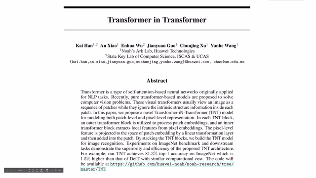
00:00:36–00:00:37 · 画面 00200:00:37–00:00:39 · 画面 003
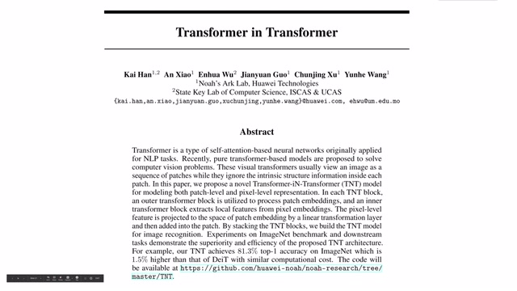
00:00:37–00:00:39 · 画面 00300:00:39–00:00:45 · 画面 004
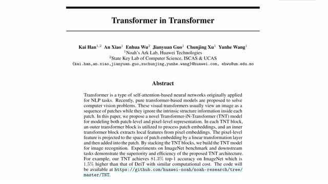
00:00:39–00:00:45 · 画面 00400:00:45–00:00:54 · 画面 005
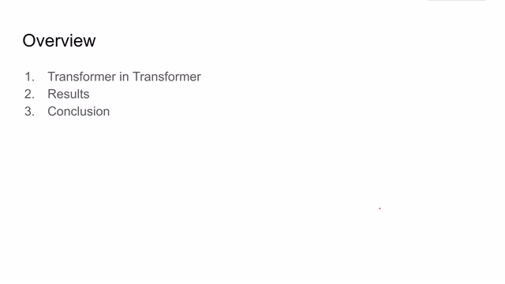
00:00:45–00:00:54 · 画面 005作者实验的一些结果以及得到的结论。如果你对 Vision Transformer 不是很熟悉，那么强烈建议你先去看之前的一个 VITVision Transformer 这个视频。好的，让我们直接开始介绍 Transformer in Transformer。那么这个结构就是本文提出的 Transformer in Transformer 的结构。我们可以看到它，那么为了做图简单的作者省略了 Position Encoding。那么它使用的 Position Encoding 跟我们之前的 Vision Transformer 也是一样的
00:00:54–00:01:09 · 画面 006
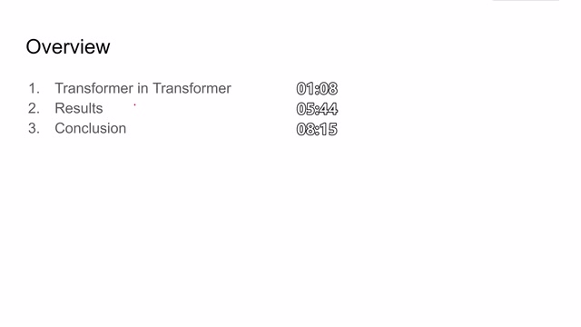
00:00:54–00:01:09 · 画面 00600:01:09–00:01:36 · 画面 007
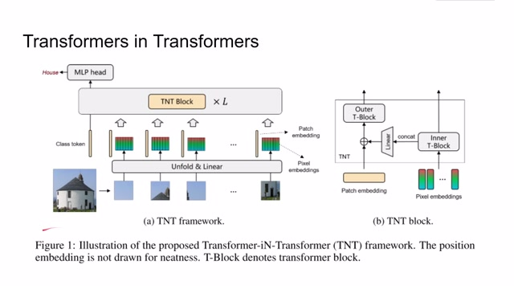
00:01:09–00:01:36 · 画面 007那么本文和之前 Vision Transformer 最大的区别是什么呢当然就是这个 Transformer Encoder 的部分这里本文提出的是使用 Transformer in Transformer TNT 的 block 来替换到原来单纯的 Transformer 的这么一个结构那么所谓的 TNT block 是怎么的结构呢其实它非常直白也就是我们会维护两个 Transformer 第一个 Transformer 我们叫 Outer Transformer Block 这个 block 就是用来处理 Patch 的 embedding 就是每一个图像块
00:01:36–00:01:39 · 画面 008
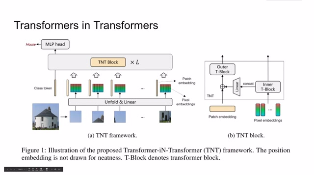
00:01:36–00:01:39 · 画面 00800:01:39–00:02:22 · 画面 009
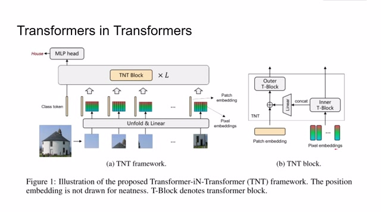
00:01:39–00:02:22 · 画面 009他们所提取出的 token 不断进行 transform 来用来处理它而这个 inner transformer block 它就是用来处理每一个 patch 之间每一个像素提取出的 embedding 其实也不一定是像素你可以把一个大的 patch 拆成更小的 patch 每一个小的 patch 它就可以提出一个 token 那么这个 token 也可以经过 transformer 一层一层的传递下去当然为了让 outer transformer 能够得到 pixel 之间的信息
所以这个 inner transformer 它的输出会串接起来过一个 MLP 加合到原来的 patch embedding 上。这样子得到了新的 embedding 送到 outer block 就会使得这个 outer transformer block 能够获得所有的信息了。我们从原理上来看这是一个非常明确的从粗到细这么一个金字塔结构。然后我们结合表达式来梳理一下这个 TNT block 它的逻辑
00:02:22–00:02:26 · 画面 010
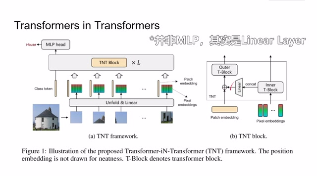
00:02:22–00:02:26 · 画面 01000:02:26–00:02:40 · 画面 011
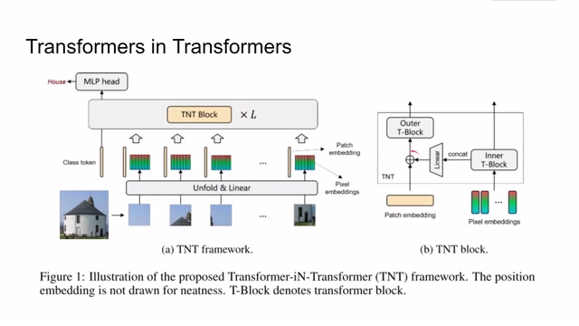
00:02:26–00:02:40 · 画面 01100:02:40–00:04:00 · 画面 012
00:02:40–00:04:00 · 画面 012首先这个 pixel embedding 它跟 patch embedding 是一样的只不过这里的原始图像换成了一个 patch 然后把 patch 拆成各个小的 pixel 每个 pixel 经过 MLP 就可以得到这个 pixel embedding 那么这里 pixel embedding 是使用了 y 来表达的跟经典的 transformer encoder 一样对于 inner transformer 来说也是先过 layer normalization 过 multi-head self-attention 再和原来的自己加起来
然后呢，得到中间的这个 Y'这个 Y'呢，再经过 layer normalization，送到 MLP，再和自己原来的这个值加起来，就得到了这个 transformer 的输出。这个呢，就是 inner transformer，它的运行的流程呢，跟我们标准的 transformer 是一样的，而且呢，因为我们并不需要在这个 level 做 classification，做 recognition 这些东西。
所以在 pixel embedding 里面我们是没有像之前的 xclass 那个 token 的而对于 outer transformer 它的情况会稍微复杂一些首先我们这里会得到 inner transformer 输出了一堆 token 我们把这个 token 串接成一个大的 vector 然后送到一层 linear layer 里面这里乘上 weight 这里加上 bias 然后加上原本的 patch embedding 就会得到真正的需要送到 transformer 里面的 token 也就是这个 z
00:04:00–00:04:01 · 画面 013
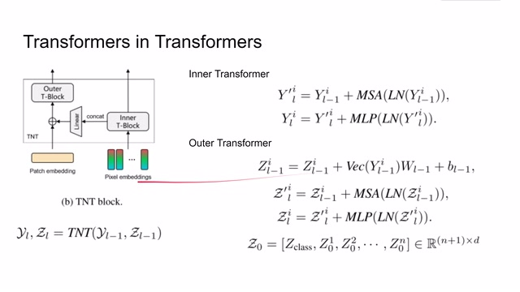
00:04:00–00:04:01 · 画面 01300:04:01–00:04:07 · 画面 014
00:04:01–00:04:07 · 画面 01400:04:07–00:04:08 · 画面 015
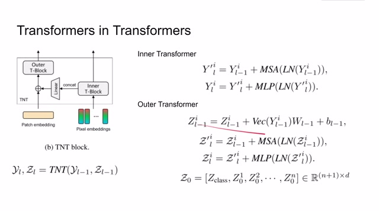
00:04:07–00:04:08 · 画面 015那么这个子一样的也是跟标准的 transformer 一样过 layer normalizationmulti-head self-attention 对吧加起来再再做 normalization 再做 mlp 那么最后呢就得到了我们想要的 representation 那么因为我们要在 outer transformer 做这个 classification 所以呢在所以在 patch embedding 的时候呢我们会加这么一个 token 那么最后呢也是会取 zl0 的 representation
00:04:08–00:04:58 · 画面 016
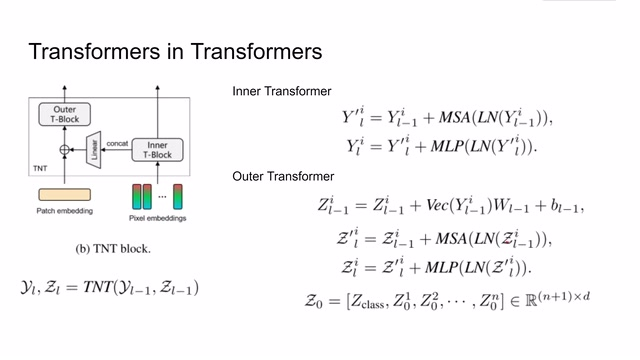
00:04:08–00:04:58 · 画面 016作为后续任务的使用的 feature 那么简单来说对于这个 transformer in transformer 这个 block 来讲它的输入是 pixel embedding 这个 y 和 patch embedding 这个 z 那么输出呢还是这两个 embedding 那么它们的尺寸大小完全一样就可以一层一层的串接起来了这个呢就是 transformer in transformer tnt 网络它的结构在这里需要额外提的是这个 position encoding
00:04:58–00:05:45 · 画面 017
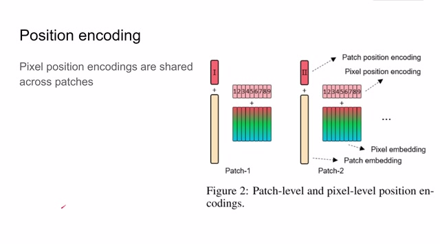
00:04:58–00:05:45 · 画面 017因为我们使用了两个 scale 的 transformer，所以自然也需要使用两个 scale 的 encoding。那么对于外层的 outer transformer，对于 patch 的 position encoding 跟原来的一样，对吧？每个 patch123456789 的排下去就可以了。而对于 pixel position encoding，我们对于每一个 patch 中的 pixel 使用的 position encoding 是一样的，也就是说，我维护一个 pixel position encoding 的这个 network。
那么它输出的结果得到这个 position encoding，对所有的 patch 都可以适用，也就是每一个 patch 中的 pixel embedding 都会加一个相同的 position encoding。那么这就是作者关于 position encoding 的设计。好的，那么我们就可以来到结果。首先是 ImageNet 相对于这些 CNN 的方法，相对于这些 transformer 的方法，那么本文提出的方法性能肯定是 outperform 前面的这些方法。作者在这里还汇报了一些消融实验。
00:05:45–00:05:55 · 画面 018
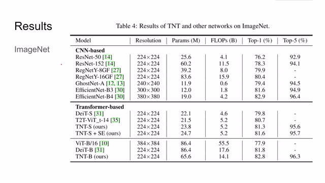
00:05:45–00:05:55 · 画面 01800:05:55–00:05:57 · 画面 019
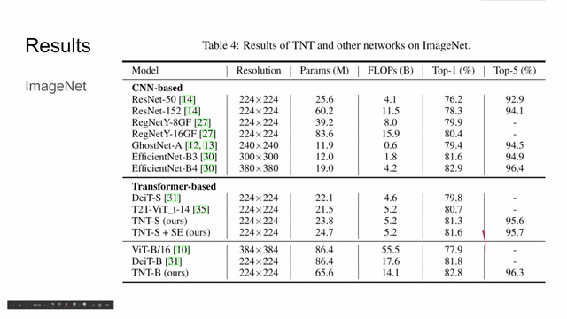
00:05:55–00:05:57 · 画面 01900:05:57–00:06:21 · 画面 020
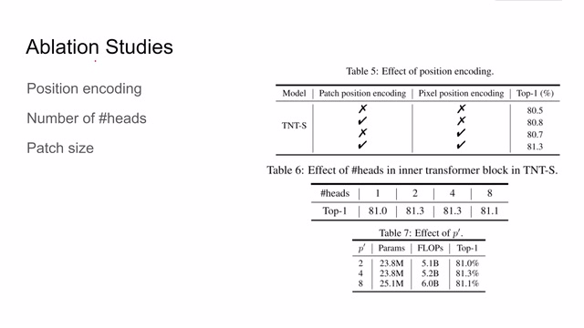
00:05:57–00:06:21 · 画面 020比如说，我在 patch 和 pixel level 是否使用 position encoding，那么肯定是使用了两个 position encoding 效果是最好的。最后还是在 inner transformer 中我们应该使用多少个 head，以及每一个 pixel patch 它应该选多大，也就是每一个 patch 中小的 patch 应该选多大，那么这里也作为汇报的结果。
此外呢，作者也是做了一些 Transfer Learning 的实验，主要呢就是把这些低像素的图像用高分辨率再 fine-tune 一下，看一下它的表现。那么总的来说，本文提出了一种 Transformer in Transformer 的 block，它通过使用 Inner Transformer 使模型呢先注意到了局部的信息，然后再把这个局部的信息汇报给 Outer Transformer，使它更好地来估计全局的信息。那么这个思路呢也是计算机视觉中非常经典的。
00:06:21–00:06:31 · 画面 021
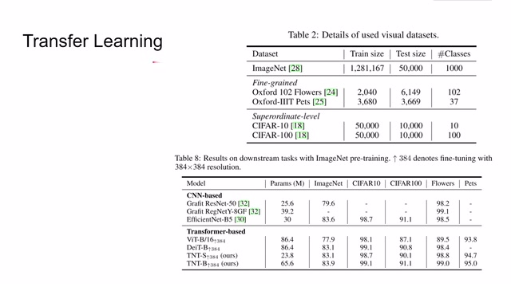
00:06:21–00:06:31 · 画面 02100:06:31–00:07:15 · 画面 022
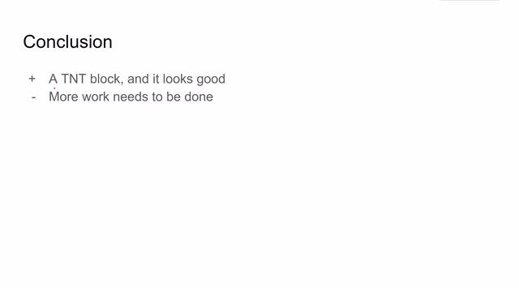
00:06:31–00:07:15 · 画面 022金字塔式的结构，但是就本文来说，它汇报的实验丰富度啊、可视化等等这些东西，比原始的这个 Vision Transformer 比原始的 Vision Transformer 还是有一定差距。这里呢我也在跟作者沟通，看看是否在将来会有更多的实验的结果能够公布出来。好了，那么以上呢就是我对这篇论文的简单的介绍，感谢您的收看，再见
00:07:15–00:07:15 · 画面 023
00:07:15–00:07:15 · 画面 023转写与来源说明 · 0 个自动复核提示
保留 16 个原始语音片段，0 个片段触发自动复核提示。提示仅用于定位可能的术语、重复或识别问题，不等于已确认错误。
讲解画面为源视频截图（640×360），不是可编辑 PPT 文件。全片按每秒 2 帧扫描内容变化，逐步展开页保留；连续动画保留代表画面。清晰度受源视频限制。
原视频：paper/合集_2026-10-16_新模型/[论文简析]TNT Transformer in Transformer[2103.00112].mp4
SHA-256：18a6cf511fc50e78f6f89c1de22a4380a7416a747683211078f61573b0511ec2
全文按视频语音与画面制作。原论文可从上方链接下载；完整资料包保留全文、原始逐字稿、字幕和校对记录。